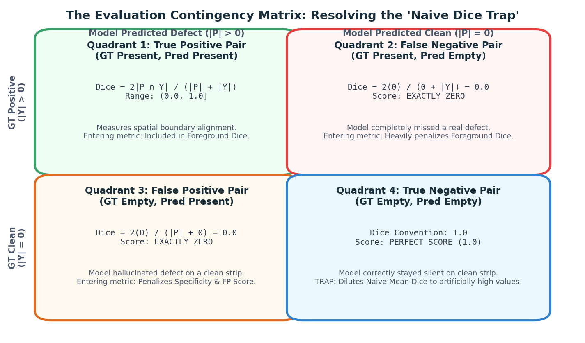
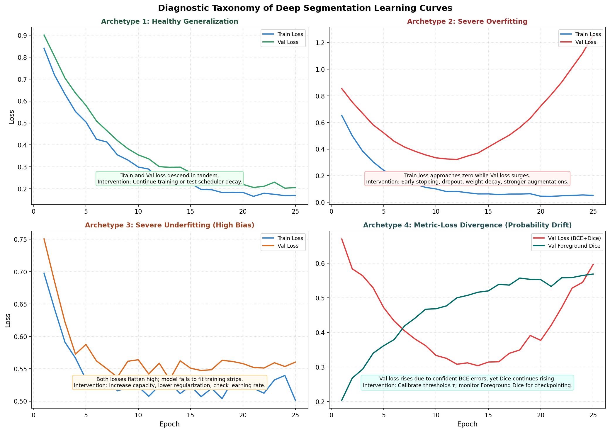

Metric Governance: Validation Dice, Empty Pairs, and Overfitting
In computer vision competitions, the gap between local validation scores and leaderboard reality is the most frequent source of student frustration. A student might excitedly report: "My validation Dice reached 0.89!"—only to submit their predictions and receive a disappointing leaderboard score of 0.42.
How can a model achieve a local Dice of 0.89 and yet fail on the competition leaderboard? The answer lies in the mathematical mechanics of empty masks and the composition of the official competition metric.
This guide unravels the "Naive Dice Trap," decomposes the 70/20/10 competition evaluation formula, maps out six diagnostic learning curve archetypes, and establishes strict metric governance to detect overfitting before submitting.
1. Observable Problem: The "Naive Dice Trap"
To understand why aggregate validation numbers can be wildly misleading, examine this mathematical paradox:
Suppose you write a "lazy" baseline script that ignores all input images and outputs an empty prediction (all zeros) for every defect channel across the entire validation dataset.
What is the resulting Dice score?
Dataset Setup:
Validation Set: 2,000 image strips x 4 defect classes = 8,000 image-class pairs.
Defect Distribution:
• 1,200 pairs contain real defects (GT Positive: |Y| > 0).
• 6,800 pairs are completely clean (GT Empty: |Y| = 0).
Lazy Model Output: All Zeros (|P| = 0 for all 8,000 pairs).
Scoring the 8,000 pairs using the standard Kaggle empty-pair convention:
1. For the 1,200 positive pairs:
Prediction is empty -> Dice = (2 * 0) / (0 + |Y|) = 0.00
2. For the 6,800 clean pairs:
Both GT and Prediction are empty -> Convention defines Dice = 1.00!
Aggregate Naive Mean Dice:
Dice_mean = ( (1,200 * 0.00) + (6,800 * 1.00) ) / 8,000 = 6,800 / 8,000 = 0.8500![!CAUTION] The Naive Dice Trap: A model that predicts nothing at all achieves an \(85\%\) Naive Mean Dice score! If you monitor
dice_meanduring training, an untrained model that predicts all background will appear to outperform a real model that detects defects but occasionally makes false alarms on clean material.
2. Deconstructing the Evaluation Metric: The 2×2 Contingency Grid
To prevent this distortion, we must examine the contingency grid of image-class pairs:

Figure 5.1: The 2×2 contingency matrix of image-class pairs. When both ground truth and predictions are empty (Quadrant 4), the score convention assigns 1.0, diluting naive averages. True segmentation capability lives in Quadrant 1 and Quadrant 2.For any individual image \(i\) and defect channel \(c\):
The Three True Operational Metrics:
Instead of relying on a single naive average, professional segmentation pipelines track three separate quantities:
1. Foreground Dice (foreground_dice)
Evaluates Dice overlap exclusively on ground-truth positive pairs (\(|Y| > 0\)):
where \(\mathcal{P} = \{ (i, c) \mid |Y_{i, c}| > 0 \}\) is the set of positive pairs.
- On our "lazy all-zeros model": \(\text{Dice}_{\text{FG}} = \mathbf{0.0000}\) (Revealing true failure!).
2. Empty-Pair Specificity (empty_pair_accuracy)
Evaluates the model's ability to stay completely silent on clean material (\(|Y| = 0\)):
where \(\mathcal{E} = \{ (i, c) \mid |Y_{i, c}| = 0 \}\) is the set of empty pairs.
3. False-Positive Pixel Penalty (false_positive_pixel_score)
Penalizes the total canvas area of hallucinated defect pixels on clean material:
where \(\text{Canvas Pixels} = 128 \times 800 = 102,400\).
3. The Official 70/20/10 Competition Score Architecture
The official competition leaderboard score balances detection overlap against false alarm suppression using a weighted composite formula:
Let us compute the score for our "lazy all-zeros model" under the true official metric:
Under the true metric, the lazy model receives an abysmal \(0.30\)—matching its actual zero-utility reality!
Decision Threshold Trade-offs (\(\tau\))
Continuous sigmoid probabilities \(P \in [0, 1]\) are converted to binary masks via a decision threshold \(\tau\):
- Lowering \(\tau\) (e.g. \(\tau = 0.3\)): Increases sensitivity. Catches faint, low-contrast scratches (raising \(\text{Dice}_{\text{FG}}\)), but causes minor surface noise to be classified as defects, devastating \(\text{Spec}_{\text{empty}}\) and \(\text{Score}_{\text{FP}}\).
- Raising \(\tau\) (e.g. \(\tau = 0.7\)): Increases specificity. Suppresses false alarms on clean material, but misses faint longitudinal micro-cracks.
Calibrating \(\tau\) against the composite competition score on held-out validation data is essential before submitting.
4. Learning Curve Taxonomy: Diagnosing Model Health

Figure 5.2: Diagnostic taxonomy of deep segmentation learning curves across 25 training epochs, contrasting healthy generalization against overfitting, underfitting, and metric-loss divergence.When monitoring your training and validation curves, watch for these distinct archetypes:
Archetype 1: Healthy Generalization
- Symptom: Training loss descends steadily. Validation loss descends in tandem, flattening around Epoch 18. Validation Foreground Dice rises smoothly from \(0.20\) to \(0.64\).
- Mechanism: The model is learning robust, invariant features (scratch aspect ratios, inclusion textures) that generalize across unseen strips.
- Action: Check if a learning-rate scheduler decay can anneal boundaries further; prepare checkpoint for post-processing calibration.
Archetype 2: Severe Overfitting
- Symptom: Training loss plummets toward near-zero (\(0.04\)), while validation loss reaches a minimum at Epoch 8 and surges upward (\(0.22 \to 0.45\)). Validation Dice degrades from \(0.62\) down to \(0.51\).
- Mechanism: The high-capacity network has memorized specific sensor noise patterns and roller imperfections unique to the training fold.
- Action: Activate early stopping; increase data augmentation (flips, contrast jitter, CLAHE); increase weight decay; consider dropping model capacity.
Archetype 3: Severe Underfitting (High Bias)
- Symptom: Both training loss and validation loss flatten early at high values (\(0.55\)). Validation Dice remains stagnant below \(0.25\).
- Mechanism: The model lacks capacity or representational power, or the learning rate is trapped in a bad plateau.
- Action: Verify data loading and target normalization; verify that skip connections are intact; switch to a more expressive backbone; verify loss function heads.
Archetype 4: Metric-Loss Divergence (Probability Calibration Drift)
- Symptom: Training loss and validation loss both increase slightly, yet Validation Foreground Dice continues rising!
- Mechanism: The model's raw probability calibration is shifting (predicting higher logits on borderline pixels, incurring BCE penalty), but its rank-ordering remains superior, resulting in cleaner thresholded masks.
- Action: Do not abort training based on loss alone. Follow the task-specific metric (
foreground_dice) as your primary checkpoint selection signal.
5. Diagnostic Symptoms: Causes and Checks
| Observable Symptom in Logs | Root Mechanism | Concrete Measurement | Next Step |
|---|---|---|---|
| Local validation Dice is \(0.85+\), but public leaderboard score is \(< 0.45\). | The Naive Dice Trap: local code averaged all pairs including true-negative clean pairs (\(1.0\)). | Compute foreground_dice on positive pairs only; evaluate empty-pair false positive count. |
Switch checkpoint selection and reporting to foreground_dice or the 70/20/10 proxy. |
| Training loss reaches \(0.05\), but validation Foreground Dice plateaus at \(0.35\). | Overfitting to training textures; model memorizing specific strips rather than invariant defect features. | Calculate training vs. validation loss gap; inspect training vs. validation predicted masks. | Introduce early stopping; increase geometric augmentations (horizontal/vertical flips); increase weight decay. |
| Validation curves oscillate violently from epoch to epoch (e.g. Dice jumps \(0.45 \leftrightarrow 0.62\)). | Small validation sample size or severe rare-class variance (the "split lottery"). | Check validation fold class support count; verify combination stratification. | Ensure validation split uses combination stratification; increase patience \(p \ge 5\) to ignore single-epoch jitter. |
| Best epoch identified by validation loss is completely different from best epoch identified by Dice. | BCE loss evaluates soft uncalibrated probabilities, while Dice evaluates thresholded binary decisions. | Compare correlation between validation loss and foreground_dice across all epochs. |
Select checkpoints using foreground_dice or score_pair_proxy; loss is an optimization proxy, not the competition goal. |
6. Implementation Pattern: Logging Comprehensive Validation Metrics
Here is how to structure a leak-free validation evaluation function in PyTorch:
import numpy as np
import torch
@torch.inference_mode()
def evaluate_validation_run(
model: torch.nn.Module,
val_loader: torch.utils.data.DataLoader,
threshold: float = 0.5,
device: torch.device = torch.device("cuda"),
) -> dict[str, float]:
"""Computes transparent, leak-free metrics decomposed across positive and clean pairs."""
model.eval()
all_dices = []
all_pred_areas = []
all_gt_areas = []
for batch in val_loader:
images = batch["image"].to(device)
targets = batch["mask"].cpu().numpy().astype(bool) # [B, 4, 128, 800]
logits = model(images)
probs = torch.sigmoid(logits).cpu().numpy()
preds = (probs >= threshold) # [B, 4, 128, 800]
# Calculate intersection and areas across spatial dimensions (axis 2, 3)
tp = np.logical_and(preds, targets).sum(axis=(-2, -1))
pa = preds.sum(axis=(-2, -1))
ya = targets.sum(axis=(-2, -1))
total = pa + ya
# Compute Dice with empty-pair convention = 1.0
dice = np.divide(2.0 * tp, total, out=np.ones_like(total, dtype=float), where=(total > 0))
all_dices.append(dice)
all_pred_areas.append(pa)
all_gt_areas.append(ya)
dices = np.concatenate(all_dices, axis=0) # [N, 4]
pred_areas = np.concatenate(all_pred_areas, axis=0)
gt_areas = np.concatenate(all_gt_areas, axis=0)
# Positive pairs vs. Empty pairs
is_positive = (gt_areas > 0)
is_empty = (gt_areas == 0)
# 1. Naive Mean Dice (For diagnostic awareness only!)
dice_naive = float(dices.mean())
# 2. Foreground Dice (Only on positive pairs)
dice_fg = float(dices[is_positive].mean()) if is_positive.any() else 0.0
# 3. Clean-Image Specificity (Empty accuracy)
empty_acc = float((pred_areas[is_empty] == 0).mean()) if is_empty.any() else 1.0
# 4. FP Pixel Score
canvas_pixels = 128 * 800
fp_pixel_score = float(1.0 - (pred_areas[is_empty] / canvas_pixels).mean()) if is_empty.any() else 1.0
# 5. Official Competition Proxy Score
competition_proxy = (0.70 * dice_fg) + (0.20 * fp_pixel_score) + (0.10 * empty_acc)
return {
"val/naive_mean_dice": dice_naive,
"val/foreground_dice": dice_fg,
"val/empty_pair_accuracy": empty_acc,
"val/fp_pixel_score": fp_pixel_score,
"val/competition_proxy": competition_proxy,
}7. Ungraded "Try It": Interpreting a Metric Report
A student shares the following metric table from their latest validation evaluation:
Validation Report:
• Naive Mean Dice: 0.8842
• Foreground Dice: 0.4120
• Empty-Pair Accuracy (Specificity): 0.9650
• False-Positive Pixel Score: 0.9980
• Official Competition Proxy: 0.6811Diagnostic Questions:
- Why is
Naive Mean Dice(\(0.8842\)) more than double theForeground Dice(\(0.4120\))? - If this student changes post-processing thresholds and observes that
Foreground Dicerises to \(0.5200\), butEmpty-Pair Accuracydrops to \(0.8100\), what is the newCompetition Proxy Score? - Did the threshold change represent a genuine overall improvement according to the competition objective?
8. Authoritative References
- Dice, L. R. (1945). Measures of the Amount of Ecologic Association Between Species. Ecology, 26(3), 297–302.
- Sørensen, T. (1948). A method of establishing groups of equal amplitude in plant sociology. Kongelige Danske Videnskabernes Selskab.
- Taha, A. A., & Hanbury, A. (2015). Metrics for evaluating 3D medical image segmentation: analysis, selection, and tool. BMC Medical Imaging. (Comprehensive review of overlap metrics, empty set conventions, and precision-recall trade-offs).